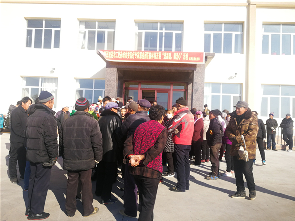
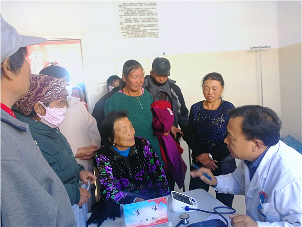
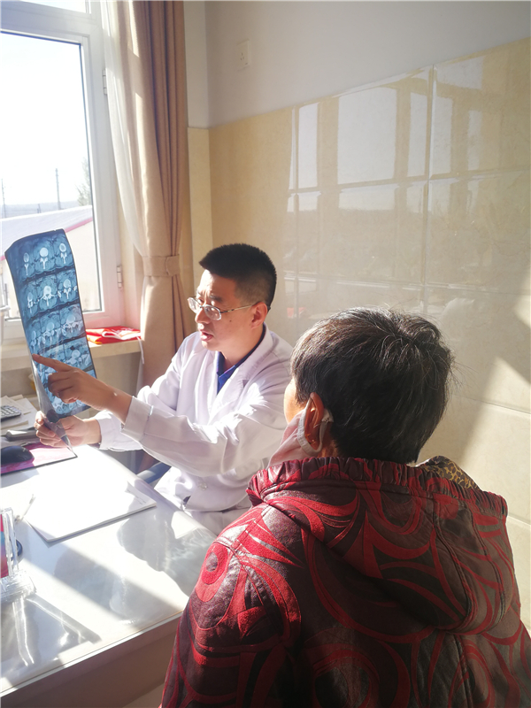

为扎实推进“不忘合作初心，继续携手前进”主题教育活动，2019年10月26日，农工党赤峰市委组织农工党医疗专家赴赤峰市林西县开展“不忘合作初心继续携手前进”精准扶贫精准医疗活动，以实际行动践行初心和使命。

活动中，来自赤峰市医院、赤峰学院附属医院、肿瘤医院、妇幼保健医院等4家医院的心外科、骨科、泌尿外科、超声科等科室的医疗专家，为当地因病致贫、建档立卡贫困群众开展了集中义诊，把优质诊疗服务送到基层群众身边，助力脱贫攻坚。活动共为130余名群众进行了诊疗，为100余名群众进行了免费彩超检查，并免费发放了药品。

在集中义诊的同时，针对行动不便的患者，专家们还深入贫困户家中，为患者提供医疗咨询服务和就医帮助。农工党赤峰市委的部分党员还深入贫困户家中，为贫困户赠送农工党赤峰市委制作的健康讲座光盘，并开展疾病谱调查，为相关部门疾病防治、救助帮扶提供依据。